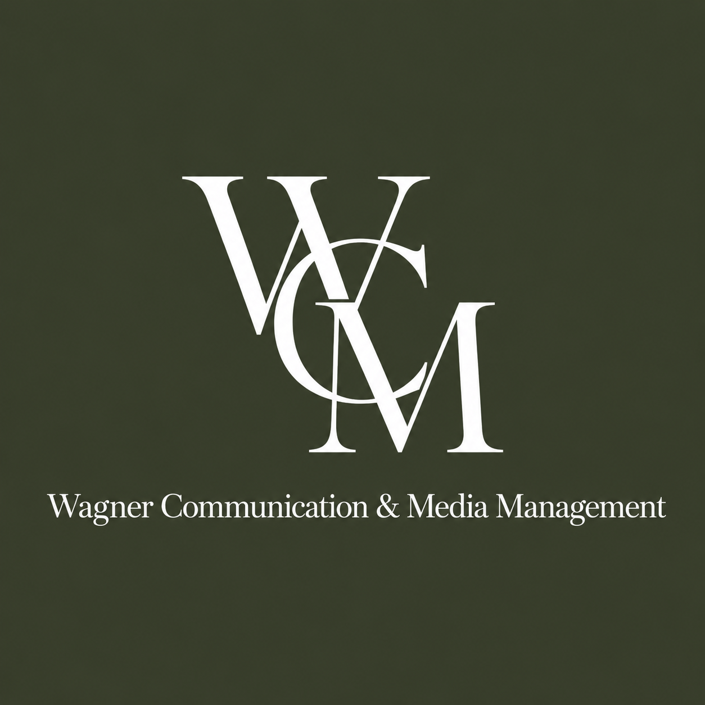
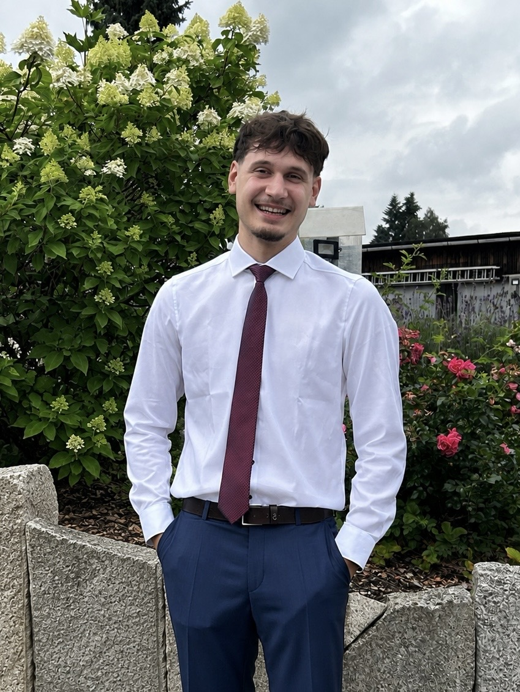

Social Media Management
Pflege Ihrer Unternehmensaccounts, Redaktionsplanung und regelmäßige Beiträge.

WagnerCommunication & Media ManagementMedienlösungen für kleine Unternehmen
Wir übernehmen Social Media Management, Content-Produktion, Videoschnitt und auf Anfrage auch die Erstellung moderner Unternehmenswebsites.
01 / Leistungen
Pflege Ihrer Unternehmensaccounts, Redaktionsplanung und regelmäßige Beiträge.
Konzeption, Aufnahme, Schnitt und Bearbeitung von Videos sowie Bild- und Textinhalten.
Neue, mobil optimierte Unternehmenswebsites oder Modernisierung bestehender Auftritte.
Weitere Leistungen passend zu Ihren Zielen und Ihrem gewünschten Umfang.
02 / Pakete

Samuel Wagner03 / Über uns
Wagner Communication & Media Management wurde 2026 von Samuel Wagner gegründet und unterstützt kleine Unternehmen dabei, ihre Leistungen modern, verständlich und professionell zu präsentieren.
Der Schwerpunkt liegt auf persönlicher Betreuung, praktischer Umsetzung und einem fairen Preis-Leistungs-Verhältnis.
Unverbindlich anfragen
Telefonisch erreichbar Montag bis Freitag von 12:30–13:30 Uhr und 16:00–18:00 Uhr.
0179 5630406 info@wagnermediamng.com WhatsApp schreiben